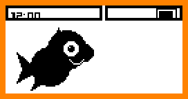
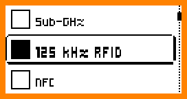
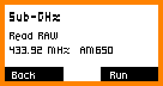

Official Flipper chrome on the T-Embed: 3-line framed main menu, 13px status bar, bottom action buttons, dolphin desktop. 128×64 ink, 2× on the 170×320 ST7789. Bluetooth (Nordic UART) for phone and PC. Not affiliated with Flipper Devices.



Flipper OFW layout: desktop, 3-line main menu, Sub-GHz OOK, NFC UID, IR, nRF24 (Plus), GPIO, Bad USB, Bluetooth, Passport, archive, settings.
Chrome/Edge Web Serial talks to the ESP32-S3. Flash FinOS, or — if FinOS is already running — push an app straight onto the device.
Catalog of .tapp JSON apps. Download, sideload, or install over USB without a reflash. Upload your own.
Electron companion in the spirit of qFlipper: device info, file manager, CLI, firmware update, app install.
T-Embed CC1101 and T-Embed CC1101 Plus. Plus enables the onboard nRF24. Everything else is shared.
UI font is Micro 5 (SIL OFL). Icons and Fin the dolphin are original 1-bit artwork. MIT licensed firmware.